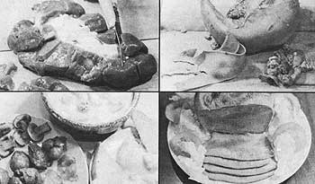
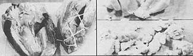
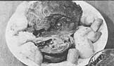
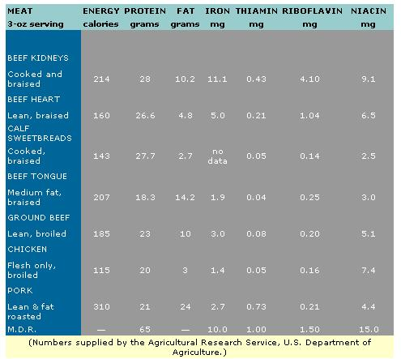

Although MOTHER's staff has no argument with vegetarians (some of the people here at the home office, in fact, are vegetarians), we have no real argument with meat eaters either. There are many paths to the True Light, and we must each-when it comes right down to it-find our own way. Still, it does seem a shame that so many of the carnivores among us seem to think that "meat" means only "muscle" . . . and never "organ". This foolish misconception both [1] leads to the unnecessary waste of much valuable animal protein, and [2] cheats the meat eaters among us from some of the most savory dishes of all. Lucille Sivley means to correct that situation.
Our prehistoric ancestors instinctively prized the richly nourishing organ meats of the animals they consumed. And today, most of the meat-eating peoples of the world continue to share this appreciation for low-in-fat, vitamin-and-mineral-rich hearts, tongues, kidneys, sweetbreads, etc.
Most of the meat-eating peoples of the world, that is . . . except for those who live right here in the United States. For some reason, we Americans are downright squeamish about consuming such organ meats. Which is absolutely ridiculous, since we regularly eat this healthful protein anyway ( unhealthfully disguised-along with less mentionable ingredients-in the tons of processed and chemical-laced "lunch" meats that we gulp down each year).
So, if you eat meat, why pay premium prices (those little plastic packages of processed slices and spreads are frightfully expensive on a per-pound basis) for the privilege of getting your kidneys, sweetbreads, etc., secondhand? Why? When, even in today's age of inflation, you can frequently still purchase the same delicacies-fresh, unprocessed, and unchemicalized-for less than 500 a pound!
The following recipes have grown out of my own experiments with organ meat cookery. Most of the folks who taste them think they're delicious and I believe that you'll find it difficult to go wrong with any one of the following dishes (or the organs from which they're made). In all cases, I've specified beef in the following recipes since beef organs are generally more readily available and have a milder taste than their pork, etc., counterparts (although I have been told that the heart and tongue from the American bison beats beef heart and tongue by a country mile).
Beef kidneys are good organs to start with because they're almost always both inexpensive and plentiful. The mature kidneys weigh about 12 ounces (three-quarters of a pound) each, are deep red in color, and have a somewhat bumpy appearance (compared to pork kidneys, which are smoother). Most markets carry these organs-even if they don't stock tongue or sweetbreads-so you should have no trouble finding them.
Avoid kidneys that are covered with bruised or discolored areas or which have a dark, crusted look around their edges. You should likewise reject any of the organs that have a strong odor or which smell of ammonia.
The trick to preparing superb kidneys consists of [1] rinsing the vitamin-rich organs in cold running water and then [2] soaking them in chilled salt water-made by adding one teaspoon of salt to each quart of water-for one to two hours prior to their use. The two-part procedure removes the strong, bitter taste (which has given this delicious and healthful meat such a bad name) that is so common to improperly prepared kidneys.
If you buy your kidneys frozen (perhaps from an "organic" food store) instead of fresh, soak them in a bowl of cold, salted water-use the same formula given above-until they thaw. Then rinse the organs in cold running water and, finally, soak them in fresh salt water for another hour.
There are two ways to clean a kidney before it's cooked. You can cut it in half lengthwise and remove-from the inside-the tubes and fat that it contains. Or you can slice into the organ from the outside and cut away sections of the meat a chunk at a time until nothing is left to throw away but a pale core of tube-threaded tissue. I've found that the first technique works best when I'm preparing smooth pork kidneys but-thanks to their irregular shape-I prefer to use the second approach when I'm cutting up beef kidneys. Give both methods a try and establish your own preference in the matter!
Once your beef kidneys have been rinsed, soaked, and trimmed, you're ready to whip them up into a tantalizing dish. I suggest starting with the following recipe . . . which makes a fine late breakfast or early lunch for four:
4 strips of bacon
2 beef kidneys, sliced
6 mushrooms, sliced
2 tablespoons of water
Fry the bacon in a heavy skillet until crisp and then remove it to a warm place. Next return two tablespoons of the grease to the frying pan and quickly brown the kidneys and mushrooms. Then add the water, lower the heat, cover the skillet, and simmer gently for five to ten minutes (or until the kidneys are tender). Serve at once with the bacon, and salt and pepper to taste.
2 strips of bacon, chopped
2 medium onions, coarsely chopped
2 beef kidneys, sliced
flour
1-1/2 cups of water
4 medium potatoes
Fry the bacon in a heavy pan until the chopped pieces of meat become transparent. Then add the bits of onion and stir until they've become limp. Next roll the strips of kidney in flour, add them to the pan, and brown them. Finally, pour in the water, stir everything well, cover, lower the heat, and simmer for an hour and a half (or until the kidneys are tender). Salt and pepper to taste.
Half an hour before the above mixture has finished cooking . . . boil, drain, and whip the potatoes. Then grease a casserole or pie dish and-when the skillet of kidneys is done-pour the pan of meat and onions in, top with the beaten potatoes, and make a small hole in the center of the "cover". Brush the layer of potatoes with oil or milk (for a crunchy crust) and bake the dish in a 375° Fahrenheit oven until its top is golden brown (about 15 minutes). Serve with young carrots. This recipe feeds four and its potato topping makes the savory pie both a delight to eat and a snap to prepare.
3 tablespoons of margarine
1 cup of Spanish onion, coarsely chopped
2 beef kidneys, sliced
1-1/2 cups water
1 large carrot, shredded
1/2 teaspoon salt
1 cup mushrooms, sliced
1 tablespoon of shallot or onion, finely minced
3/4 teaspoon of dried parsley
1/8 teaspoon of thyme
3 tablespoons of Burgundy or other red wine
Melt two tablespoons of the margarine in a heavy pan and brown the onion and slices of kidney. Add the water, lower the heat, and simmer for an hour. Then stir in the shredded carrot and the salt and simmer for an additional thirty minutes. Next melt the third tablespoon of margarine in a small skillet and quickly brown the mushrooms and shallot. Add them to the kidney mixture, stir well, and simmer for ten minutes. Crush the dried parsley by rubbing it in your hands and then sprinkle it and the thyme over the contents of the heavy pan. Simmer the mixture for another five minutes to develop its flavor . . . then add the wine, stir, and serve immediately with rice. Délicieux!
Beef tongues are, in my experience, almost as readily available as kidneys. If your market doesn't ordinarily carry them, it should be able to special-order a tongue for you. And if it won't, try the stores in a Spanish-speaking neighborhood (if you live in or near a big city).
Boiled and peeled, tongue is one of the most delicious and versatile meats you can eat. Just take care (as you would with any cut of beef) to buy freshness. . . which is to say a tongue that is not slimy, bruised, or wilted. Look for one that weighs about three pounds, has a clean and pinkish-gray color, and is firm to the touch.
I start all my recipes for this meat with a good boil. Scrub the organ you've bought under cold running water and place it in a large, heavy pan. Cover with water and add two tablespoons of lemon juice, one teaspoon of salt, and six whole peppercorns. Then bring the water to a boil and simmer for three hours, or until the thickest part of the tongue can be pierced easily with a fork. (It's a good idea to check the level of the water occasionally as the meat cooks. You should also turn the tongue once or twice so that it will be evenly done when you remove it from the stove.)
Let the cooked tongue sit in its pan until the meat is cool enough to handle. Then discard the liquid and pull the fat, tendons, and bone away from the organ's root. Finally-starting at the base and working toward the tip-strip the skin from the entire tongue, just as if you were peeling an orange. The remaining meat is then ready to eat "as is" or it can be served in a number of other ways. Here are just a few:
Curl up the warm, cooked tongue and squeeze it into a bowl that is about six inches in diameter and three inches deep. Then put a tight-fitting lid-or a weighted plate-on top of the container and leave it overnight in the refrigerator. On the following day you'll be able to unmold the soft meat like jello. (It'll keep its new shape and can be sliced as needed.) You'll find that you've just created a round of the finest possible "luncheon meat" . . . without the bitterness and other undesirable side effects of the preservatives found in commercial cold cuts.
2 tablespoons of margarine
1 small onion, minced
1 tablespoon of green pepper, minced
1/2 clove of garlic, minced
4 medium tomatoes, coarsely chopped
1/2 teaspoon of salt
1/8 teaspoon of red pepper and cayenne
8 slices of cooked beef tongue
1/3 cup of Parmesan cheese
Melt the margarine in a heavy pan and add the onion, green pepper, and garlic. Sauté until the onion is limp, then stir in the tomatoes, salt, red pepper, and cayenne. Stir occasionally as you gently simmer the mixture until it becomes pulpy. Then place four of the slices of tongue in a shallow, well-greased casserole dish and cover them with half the sauce. Add the other four slices of meat and top them with the remaining sauce. Finally, sprinkle the Parmesan cheese over all and bake the dish in a 350° oven until it becomes bubbly and the cheese has turned golden brown (about 15 minutes). This recipe serves four and is delicious with Mexican refried beans and tossed salad. Most folks, however, consider this to be a spicy dish so use the red pepper and cayenne with care!
1/2 cup of cider vinegar
1/4 cup of water
1/3 cup of brown sugar, firmly packed
1 tablespoon of oil
1 tablespoon of cornstarch
2 tablespoons of water
1 small onion, chopped
1/2 small green pepper, sliced thin
1 carrot, slivered
2 cups of cooked tongue, diced
1/2 cup of pineapple, diced
Heat the vinegar, quarter cup of water, brown sugar, and oil in a heavy pan. Stir until the sugar is dissolved, then mix the cornstarch with two tablespoons of water and add the paste to the skillet. Cook and constantly stir the resulting mixture until the blend is thick and bubbly. Then add the onion, green pepper, and carrot and cook for another five minutes. At that point, stir in the tongue and pineapple, simmer everything for another five or ten minutes (until the tongue is warmed through), and serve with rice. The cider vinegar adds just the right zing to this Chinese-style dish that serves four.
Beef heart, like tongue, is a relatively large organ (the heart from a full-grown steer, bull, or cow weighs about three pounds). A good one is deep reddish brown in color and has a layer of fat around its top.
Heart is available frozen from many organic food stores and can be ordered fresh from most butchers. Sometimes it's even possible to buy half a heart and I've noticed that beef hearts are being stocked more and more by the chain super markets . . . probably because an increasing number of people are now seeking out less expensive cuts of meat.
And heart is a good buy. It costs less than steak, has more nutritional value, and . . . it's delicious! Anyone who likes hasenpfeffer, for instance, is sure to love this recipe:
1/2 beef heart
3/4 cup of white vinegar
3/4 cup of water
2 bay leaves
5 whole peppercorns
3/4 teaspoon of salt
1 small onion, coarsely chopped flour
2 tablespoons of margarine
1/2 cup of sour cream
Use a sharp knife to trim away the fat, veins, and arteries at the top of the heart and cut the remaining meat into one-inch cubes. Place the chunks in a bowl, add the vinegar, water, bay leaves, peppercorns, salt, and onion. Cover and refrigerate 12 to 24 hours.
After this marination, dry the cubes of meat and roll them in flour. Then brown the heart in margarine in a heavy pan, strain the marinade, and-while you stir it well-add the liquid to the meat. Lower the heat, cover the pan, and simmer the chunks of heart until they're tender (about three hours). You may have to add a little water from time to time during this cooking period. Finally, just before serving, add the sour cream and stir until the whole dish is smooth (and hot once again after the addition of the cream). This marinated heart serves four and is especially good with noodles or baked potatoes.
1 beef heart
2 cups stuffing flour
2 tablespoons of margarine
2 potatoes, quartered
2 carrots, cut into one-inch lengths
1 onion, coarsely chopped
1 stalk of celery, sliced
2-1/2 cups of hot water
1 teaspoon of salt
Rinse the heart thoroughly under cold running water. Trim the fat, veins, and arteries away from its top, and pack the stuffing loosely into the organ's cavities. Then use three-inch poultry skewers to pin the chunk of meat shut and lace clean string around the fasteners. (If the heart you're working with has been split down the side for inspection, open it and spread half the stuffing on each side . . . then close the organ like a book and use the skewers and string to lace it up the side and across the top.)
Roll the stuffed heart in flour and brown it in the margarine in a skillet. Then place the bulging ball of meat in a large casserole and arrange the vegetables around it. Rinse the frying pan with the 2-1 /2 cups of salted hot water, and pour the liquid over the contents of the casserole. The water should barely cover the vegetables and reach about a third of the way up on the heart. Cover and bake for two hours in a 350° oven.
To ensure that the star of this recipe is cooked evenly, turn the heart once midway through its two-hour bake. And, after the full two hours (more or less, depending on the size of the organ), let the stuffed ball of meat cool on a platter for five to ten minutes before it's sliced and served with the vegetables and gravy.
You can, of course, use your favorite Thanksgiving stuffing for the above dish . . . or loosely pack the heart with one made from the following recipe:
4 slices of old bread
3 tablespoons of melted margarine or bacon fat
1/2 teaspoon of salt
1/4 teaspoon of paprika
1/2 onion, minced
1 tablespoon of water
Cut the bread into half-inch cubes and rub them through your fingers to make crumbs. Then place the crumbs in a large bowl with all the other ingredients and mix everything together thoroughly.
Leftovers-stuffing and all-from the above recipe can be kept in the refrigerator for a week. There isn't even any need to reheat the meat for a meal. Instead, try slicing it thin and eating it with a tossed salad or on a bun with pickles. Cold heart is a treat no matter how you serve it.
The term "sweetbreads" refers both to the thymus and (sometimes) the pancreas glands of a calf or yearling beef. Of the two, the thymus-which looks rather like a large, white, membrane-coated butterfly-has the more delicate taste and texture. The pancreas (a lumpy, white organ), however, is also good to eat.
Unfortunately, though, if heart has recently become easier to buy . . . only the opposite is true of sweetbreads (at least here in the Midwest). According to a meat wholesaler who recently confided in me, this is because sausage manufacturers are now buying all of these organs that they can get. This may well be true and, at the very least, it explains the steep rise in sweetbread prices. The meats are still so tasty, however, that-high price or no-I want to give you my recipes for them.
Pancreas and thymus are both highly perishable and, for that reason, must be boiled the same day they're bought. Once cooked, they'll keep for a couple of days in the refrigerator.
Start all sweetbread recipes by rinsing the organs under running water. Then place them in a pan and cover them with water that contains a teaspoon of salt and a tablespoon of lemon juice for each quart of the liquid. Bring the water to a boil and let the sweetbreads cook for 25 minutes. Then discard the liquid and allow the meats to cool. When you can comfortably handle them, pull the outer membranes from the organs . . . and the meats will then be ready to use.
1 pound sweetbreads, cooked and sliced flour
4 tablespoons of margarine salt and pepper to taste
Slice the "breads" lengthwise and roll them in flour. Then melt the margarine in a heavy skillet and fry the meats until they're golden brown on both sides (about ten minutes). Season with salt and pepper and serve with fresh, crusty bread and your favorite juice. The recipe serves four and makes a really different change-of-pace breakfast!
2 tablespoons of margarine
2 tablespoons of cornstarch
1/2 cup of water 3/4 cup of fresh milk
1/2 teaspoon of salt a dash of white pepper
1 pound of sweetbreads, cooked and sliced
2 tablespoons of medium-dry sherry
Melt the margarine in a pan, add the cornstarch, combine the two ingredients into a paste. Then pour in the water and milk and stir constantly until the mixture becomes thick and bubbly. Add the salt and pepper and cook gently for two minutes. Place the sweetbreads in the sauce at this time and cook them until they've warmed through (approximately five to ten minutes). Finally, pour in the sherry, stir, and serve the combination with toast.
This sherry-flavored dish has got to be one of the most distinctive culinary creations I've ever tasted. I can understand why a similar dish was reputed to be one of Queen Victoria's favorites!
2 tablespoons of margarine
1 small onion, chopped
1 pound of sweetbreads, cooked and cut into half-inch cubes
1 cup of corn, freshly cut
1 carrot, diced
1 potato, cubed
1 teaspoon of salt
1 cup of fresh milk
3 cups of water
1/8 teaspoon of dried and minced garlic
1/4 teaspoon of paprika
2 tablespoons of cornstarch
2 tablespoons of water
Lightly brown the onion and cubes of sweetbread in the margarine in a heavy pan. Add the corn, diced carrot, chunks of potato, salt, milk, three cups of water, and garlic. Bring the mixture to a boil and skim away the excess fat. Then lower the heat and simmer everything (with an occasional stir) for an hour. At the end of that time, sprinkle in the paprika.
In a saucer, mix the cornstarch with the two tablespoons of water. Then add the paste to the simmered soup and stir constantly until the chowder thickens. Cook the hearty mixture an additional five minutes and serve-with fresh, crusty rolls-to four people.
The recipes in this article represent a tiny sampling of the many ways in which beef organs can be prepared. Once you've developed a taste for these choice meats-and believe me, that's not difficult to do-who knows? You may soon find yourself experimenting with brains, tripe, and even more exotic taste delights. I know that I do. Not just because they're good for me . . . but because I like them!
|
TOP LEFT: Slicing a beef kidney. TOP RIGHT: A partially peeled beef tongue. BOTTOM LEFT: Braised kidneys with mushrooms and bacon, sweetbread chowder, and sweetbreads in sherry sauce. BOTTOM RIGHT: Cooked, pressed, and sliced beef tongue. |
 TOP LEFT: Half a beef heart and a whole heart stuffed and faced for cooking. TOP RIGHT: Membrane removal from pieces of cooked pancreas. |
 Stuffed beef heart with vegetables and gravy. |
|
 Organ meat nutrition chart. |
 |
|